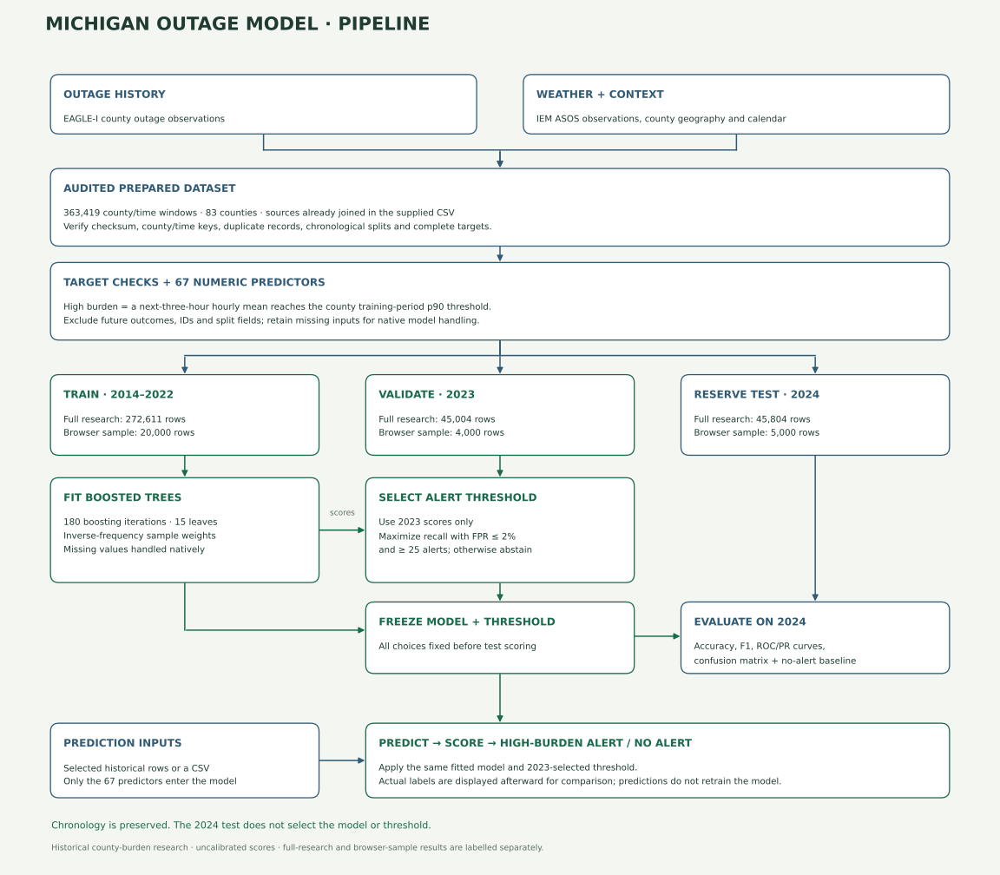

A clear target.
An honest evaluation.
Rohan Sai’s historical Michigan county outage-burden model: what it learns, which features it uses, and how to interpret its outputs.
Accuracy, ROC curves & historical test results.
Loading results…
Curves display up to 500 representative points; AUC and average precision are calculated from all test scores. Published results use all 45,804 original 2024 test windows. A new browser experiment uses the smaller, clearly labelled subset.
Confusion matrix
Evaluation report
County burden over the next three hours.
A row is a county/time window on a three-hour UTC issue cadence. The positive label means at least one of the next three complete hourly county means reaches the county’s 90th-percentile threshold, estimated from complete 2014–2022 observations (minimum one customer).
This is a relative high-burden alert, not household outage occurrence, outage onset, cause, duration or restoration time. Model scores are uncalibrated.
EAGLE-I history + ASOS weather.
The full prepared table has 363,419 rows, 74 columns and 83 Michigan counties. It covers November 2014–December 2024. Seasonal IEM ASOS observations use up to 75 stations; the assumed two-hour reporting delay was not independently verified.
Missing observations are retained. Incomplete future targets are excluded rather than converted to negatives. 2025 is excluded because the audited Michigan data lacked explicit zero readings.
A chronological experiment.


- Audit & validate. Check the original SHA-256, timestamps, county IDs, duplicate county/time keys, complete binary targets and agreement with future peaks/training-period county thresholds. The browser verifies the published subset’s separate checksum.
- Keep the chronology. Original fit: 272,611 rows in 2014–2022. Threshold validation: 45,004 rows in 2023. Fixed historical test: 45,804 rows in 2024. The browser samples 20,000 / 4,000 / 5,000 rows within those same partitions, seed 42.
- Preserve missing inputs. HistGradientBoosting handles NaN values natively. No scaling, one-hot encoding or synthetic zero-filling is used for these numeric predictors.
- Train. Fit inverse-frequency weighted examples with 180 boosted-tree iterations, learning rate 0.05, maximum 15 leaves, minimum leaf size 40, L2 regularization 2, seed 42 and no early stopping. Browser warm-start batches expose actual iteration progress; the statistical settings match the original model.
- Choose a threshold on 2023 only. Maximize validation recall while FPR ≤2% and alerts ≥25; ties prefer precision, then the higher threshold. If infeasible, abstain. The validation constraint is not guaranteed on a later year.
- Test. Score 2024 after fitting and threshold selection are fixed. Show accuracy, balanced accuracy, precision, recall, F1, ROC-AUC, average precision, false alerts, misses and an always-no-alert baseline.
- Predict. Send only the 67 numeric inputs through the fitted model. County/time context and actual targets can be displayed afterward, but never enter model inputs. Uploads do not retrain or change the evaluation.
All 67 candidate numeric inputs.
The project retains every eligible predictor and excludes seven identifier/outcome/split fields. It does not perform a top-k ranking, RFE or PCA. There is no validated global importance ranking for this HistGradientBoosting model; the feature list is not a causal explanation.
Excluded fields
Future peak and high-burden target reveal the outcome. The county training p90 belongs to target construction. County identifiers, issue timestamp and split labels are context or partition fields. Their derived pre-issue location/calendar measurements are supplied separately.
Accuracy needs a baseline.
Only 11.33% of the full 2024 windows are positive. Always predicting no alert gives 88.67% accuracy and zero positive recall. The published model achieves 93.80% accuracy, 79.52% precision and 60.99% recall at its 2023-selected threshold.
ROC-AUC measures ranking separation; average precision summarizes the precision–recall curve and is useful under imbalance. Neither turns an uncalibrated score into a real-world probability. A false alert and a missed event have different practical implications; both are shown.
Historical research, with explicit limits.
Outage coverage and zero reporting vary by year; incomplete-target exclusion can introduce selection bias. Weather coverage is seasonal, station observations are historical rather than archived forecasts, and latency is assumed. NWS warning inputs are omitted.
The 2024 period was already inspected in earlier research; it is not a new independent test. Browser sample runs and package versions can produce different scores and thresholds. Neither the full run nor the browser demo establishes live operational, household or restoration prediction.
Project by Rohan Sai. Original outage and weather data remain attributed to their providers.